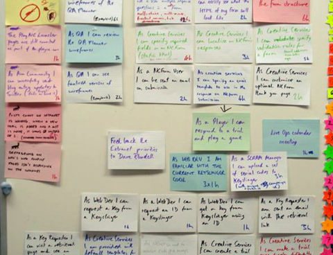

Organisez vous !
"L'organisation est une machine à maximiser les forces humaines" Peter Drucker
Une bonne organisation en amont vous permettra un travail plus efficace dans vos études.
"L'organisation est une machine à maximiser les forces humaines" Peter Drucker
Une bonne organisation en amont vous permettra un travail plus efficace dans vos études.
Organiser vous dans votre travail, eparpiller vos révisions de façon régulière dans la semaine. Varier les matières étudier chaque jours. Alterner entre relecture et Tp de façon à pas faire la même chose. Enfin prévoyer de faire des choses réalisable et de ne pas trop vous surcharger.
Pour une meilleur relecture avant votre exam, faites des fiches de révision pour synthétiser vos cours et faire ressortir les notions importantes.
Pendant vos périodes de révision ne veillez pas trop tard. Allez au lit a heure fixe pour garder rythme de travail.